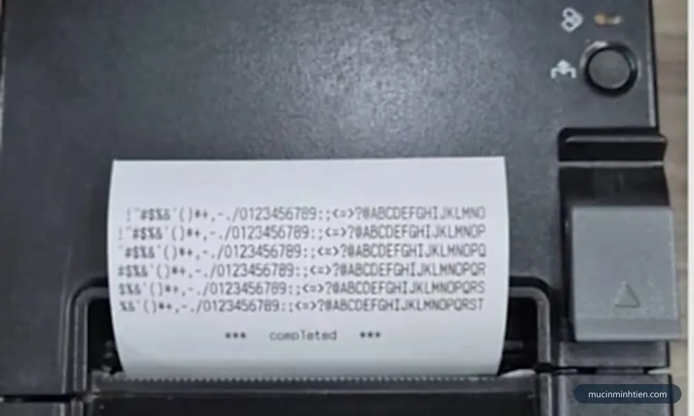
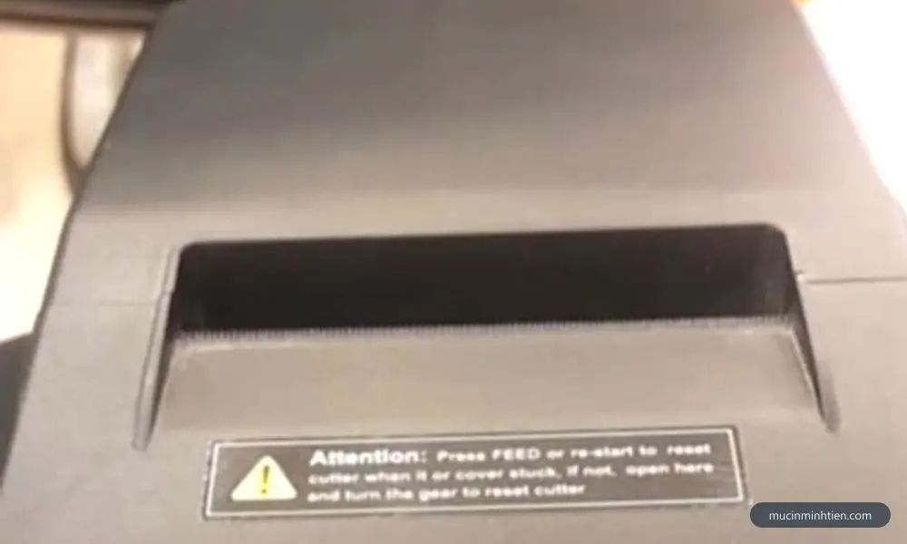
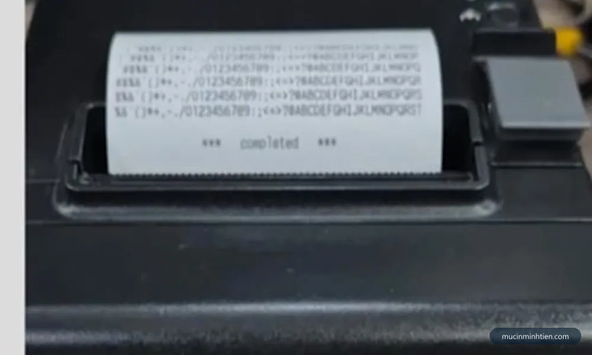
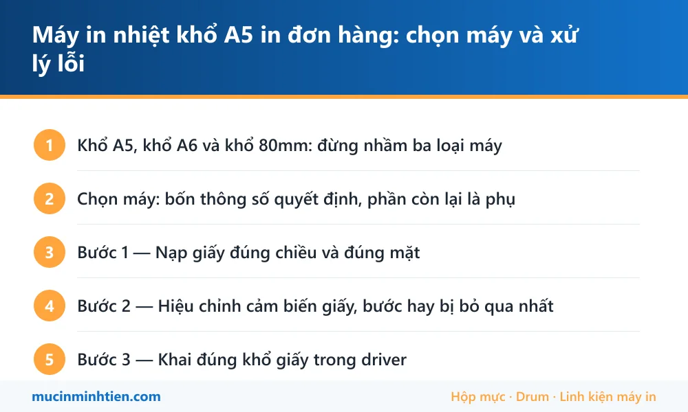

Máy in nhiệt khổ A5 in đơn hàng: chọn máy và xử lý lỗi
Chọn máy: bốn thông số quyết định, phần còn lại là phụ
1. Khổ in tối đa
Con số quan trọng nhất và cũng hay bị nói mập mờ nhất. Máy in được khổ A5 phải có đầu in đủ rộng cho 148 mm giấy. Máy quảng cáo là "in tem nhãn" nhưng đầu in chỉ rộng 104 mm thì chỉ chạy được tới khổ A6. Hỏi thẳng người bán chiều rộng đầu in tính bằng milimet, đừng hỏi khổ giấy.
2. Loại cảm biến giấy
Máy in tem phải biết mỗi tờ kết thúc ở đâu. Có hai kiểu dò:
- Cảm biến khe hở — dò khoảng trống giữa hai tem decal. Dùng cho giấy decal thường.
- Cảm biến vạch đen — dò vạch đen in sẵn ở mép sau mỗi tờ. Dùng cho giấy có vạch định vị.
Mua giấy loại nào thì máy phải hỗ trợ kiểu dò tương ứng. Máy hỗ trợ cả hai là linh hoạt nhất và nên ưu tiên.
3. Kết nối
USB là tối thiểu. Có LAN thì nhiều máy tính in chung được, tiện cho cửa hàng có nhiều nhân viên đóng đơn. Bluetooth tiện khi in từ điện thoại, nhưng nếu bạn đóng đơn trên máy tính thì đừng trả thêm tiền cho nó.
4. Tốc độ in và sản lượng ngày
Tốc độ ghi trên tờ thông số luôn là điều kiện lý tưởng. Điều đáng quan tâm hơn là máy có chịu được việc in liên tục hàng trăm tờ không, hay in một lúc thì nóng và chậm hẳn lại. Với shop trên trăm đơn mỗi ngày, nên chọn dòng có vỏ kim loại hoặc dòng ghi rõ sản lượng khuyến nghị theo ngày.

Bước 1 — Nạp giấy đúng chiều và đúng mặt
Giấy cảm nhiệt chỉ tráng hóa chất một mặt. Lắp ngược thì bản in trắng trơn hoặc rất nhạt, và rất nhiều người kết luận nhầm là máy hỏng ngay ở bước này.
- Cào móng tay lên một mặt giấy. Mặt hiện vệt đen rõ là mặt in.
- Nạp sao cho mặt in hướng về phía đầu in — thường là hướng lên trên với máy nắp lật.
- Đưa mép giấy vượt qua trục cao su, kéo thẳng, không lệch.
- Chỉnh hai thanh dẫn hai bên vừa khít mép giấy, không kẹp chặt tới mức giấy không chạy được.
- Đóng nắp, nghe tiếng khớp rõ. Nắp không khít là bản in nhạt lệch một bên.
Bước 2 — Hiệu chỉnh cảm biến giấy, bước hay bị bỏ qua nhất
Đây là nguyên nhân số một khiến máy nhả liên tục nhiều tờ giấy trắng rồi dừng. Máy chưa biết mỗi tờ dài bao nhiêu nên không biết dừng ở đâu.
Hiệu chỉnh là quá trình máy chạy vài tờ để tự học chiều dài tem bằng cách dò khe hở hoặc vạch đen. Cách làm khác nhau chút ít theo hãng, nhưng luôn thuộc một trong ba cách:
- Giữ nút Feed khi máy đang bật, thường vài giây cho tới khi đèn đổi trạng thái và máy tự chạy vài tờ.
- Tắt máy, giữ nút Feed rồi bật lại, thả nút khi đèn báo đổi màu.
- Chạy chức năng calibration trong phần mềm tiện ích của hãng trên máy tính — cách chắc chắn nhất và có báo kết quả.
Phải hiệu chỉnh lại mỗi khi đổi sang loại giấy khác kích thước hoặc khác kiểu định vị. Đổi giấy mà quên hiệu chỉnh là bản in bắt đầu trôi dần xuống, tờ sau lệch hơn tờ trước.

Bước 3 — Khai đúng khổ giấy trong driver
Máy đã hiệu chỉnh xong vẫn có thể in sai nếu máy tính gửi sang một khổ giấy khác. Việc này làm trên máy tính, một lần rồi thôi.
- Mở danh sách máy in trên Windows, chuột phải máy in nhiệt, chọn thuộc tính máy in.
- Vào phần quản lý khổ giấy, tạo một khổ tùy chỉnh đúng bằng kích thước tem — ví dụ 148 × 210 mm cho A5.
- Đặt cả bốn lề bằng không. Máy in nhiệt in tràn viền, để lề mặc định là bản in bị đẩy vào trong.
- Chọn khổ vừa tạo làm khổ mặc định của máy in.
- Trong hộp thoại in của trình đọc PDF, chọn tỉ lệ 100% hoặc kích thước thật, tuyệt đối không chọn vừa khít trang.
Bước 4 — In thử một tờ trước khi in cả loạt
Thói quen nhỏ nhưng tiết kiệm rất nhiều giấy decal. In một tờ, kiểm ba thứ: nội dung có nằm gọn trong tờ không, mã vạch có sắc nét không, và tờ tiếp theo có bắt đầu đúng vị trí không. Đạt cả ba mới in loạt.
Nếu mã vạch mờ, nâng độ đậm trong driver và hạ tốc độ in một bậc rồi thử lại. Chi tiết cách chỉnh có ở bài máy in nhiệt in mờ, chữ nhạt.
Bảng tra: lỗi in vận đơn thường gặp
| Biểu hiện | Nguyên nhân | Cách xử lý | Chi phí tham khảo |
|---|---|---|---|
| Nhả liên tục nhiều tờ trắng rồi dừng | Chưa hiệu chỉnh cảm biến giấy | Chạy calibration hoặc giữ nút Feed | 0 đ |
| Bản in trắng trơn hoàn toàn | Lắp ngược mặt giấy hoặc giấy không phải loại cảm nhiệt | Cào móng tay thử, lật đúng mặt | 0 đ |
| Nội dung tràn sang hai tờ | Khổ giấy trong driver không khớp giấy thật | Tạo khổ tùy chỉnh đúng kích thước | 0 đ |
| Bản in co nhỏ, dồn về một góc | Hộp thoại in đang để chế độ vừa khít trang | Đổi sang tỉ lệ 100% | 0 đ |
| Tờ sau lệch hơn tờ trước, trôi dần | Đổi giấy mà chưa hiệu chỉnh lại | Hiệu chỉnh lại cảm biến | 0 đ |
| Mã vạch mờ, máy quét không đọc | Độ đậm thấp hoặc tốc độ in cao | Nâng độ đậm, hạ tốc độ in | 0 đ |
| Mã vạch mất vệt cắt ngang | Đầu in bám keo và bụi giấy | Lau bằng cồn isopropyl | 0 – 100.000 đ |
| Giấy kéo lệch, mép in bị xén | Thanh dẫn giấy chưa chỉnh khít | Chỉnh lại hai thanh dẫn | 0 đ |
| Kéo nhiều tờ cùng lúc, giấy trượt | Con lăn cao su chai | Lau con lăn; chai nặng thì thay | từ 100.000 đ |
Gần như toàn bộ lỗi in vận đơn là lỗi cài đặt, không mất phí linh kiện. Cần người cài đặt tận nơi thì gọi 0915 510 203, hoặc xem dịch vụ sửa máy in tận nơi.

Giấy in vận đơn: chọn và bảo quản
- Decal cảm nhiệt hay giấy thường? Decal có lớp keo, dán thẳng lên gói hàng, tiện và chắc. Giấy thường rẻ hơn nhưng phải dùng băng keo dán, và mặt in dễ bị băng keo làm mờ.
- Kiểm tra kiểu định vị trước khi mua. Giấy dùng khe hở hay dùng vạch đen — phải khớp với cảm biến máy đang có.
- Bề mặt phải trơn mịn. Giấy nhám vừa in nhạt vừa mài mòn đầu in nhanh hơn hẳn. Cách kiểm tra và so sánh có ở bài giấy in nhiệt khổ 57mm hay 80mm.
- Bảo quản nơi khô mát, tránh nắng. Lớp phủ cảm nhiệt xuống cấp theo thời gian và theo nhiệt độ. Không trữ quá nhiều nếu sản lượng thấp.
- Tránh dán băng keo đè lên mã vạch. Keo và dung môi làm mờ vùng in, và đây là lý do rất hay khiến bưu cục quét không ra dù bản in ban đầu sắc nét.
Khi nào nên gọi kỹ thuật viên
- Đã hiệu chỉnh, đã khai đúng khổ, đã in tỉ lệ 100% mà bản in vẫn lệch.
- Máy nhận nguồn nhưng máy tính không thấy máy in dù đã cài driver đúng dòng.
- Máy kéo lệch hoặc kéo nhiều tờ dù đã lau con lăn.
- Bản in mất vệt cố định sau khi lau sạch đầu in — điểm phát nhiệt đã chết.
- Shop đang vào mùa đơn nhiều, cần dứt điểm ngay trong ngày.
Báo giá cài đặt và xử lý máy in vận đơn tận nơi
| Hạng mục | Áp dụng | Giá tham khảo |
|---|---|---|
| Cài driver, khai khổ giấy, hiệu chỉnh cảm biến | Máy in tem, in vận đơn | từ 100.000 đ |
| Kiểm tra và xử lý tại chỗ | Mọi dòng máy in nhiệt | từ 100.000 đ |
| Vệ sinh đầu in và con lăn | Xprinter, Gprinter, TSC và tương đương | từ 100.000 đ |
| Chia sẻ máy in qua mạng LAN cho nhiều máy tính | Máy có cổng mạng | từ 100.000 đ |
| Thay con lăn cao su | Tùy dòng máy | Báo giá theo dòng |
| Thay đầu in nhiệt | Tùy dòng máy | Báo giá theo dòng |
Kỹ thuật viên kiểm tra và báo giá trước khi làm — xem cam kết ở trang dịch vụ sửa máy in tận nơi TP.HCM.

Câu hỏi thường gặp
Khổ A5 và khổ A6 khác nhau thế nào khi in vận đơn?
Máy in nhiệt nhả liên tục nhiều tờ giấy trắng là lỗi gì?
Vì sao mã vạch trên vận đơn in ra không quét được?
In vận đơn có cần mực không?
Bản in bị co nhỏ hoặc lệch xuống góc là do đâu?
Nên chọn giấy cuộn hay giấy xếp lớp cho máy in đơn hàng?
Bài viết liên quan
- Sửa máy in nhiệt: lỗi nào sửa được, lỗi nào nên thay
- Máy in nhiệt in mờ, chữ nhạt: 7 nguyên nhân và cách sửa
- Giấy in nhiệt khổ 57mm hay 80mm: chọn đúng cho máy bill
- Máy in bill, in nhiệt không in được: 8 nguyên nhân và cách sửa
- Mua máy in bill ở đâu tại TP.HCM: mới hay cũ, giá bao nhiêu
- Cách cài đặt máy in vào máy tính: USB, WiFi, mạng LAN
- Bảng giá hộp mực, linh kiện và giấy in